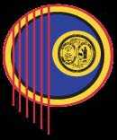

We apologize to those who were misled
The Waccamaw Indian People are recovering from a devastating dispute and we are proud to announce that that dispute has ended.
“Harold D. Hatcher is the Chief of the Waccamaw Indian People and shall be the sole person who shall be entitled to hold himself out as Tribal Chief of the Waccamaw Indian People to the general public”.
Early in the recent history of the tribe, The Waccamaw Tribal Council decided that a primary goal of the tribe would be to gain federal acknowledgement as an Indian tribe in accordance with 25-CFR-83.7, the Catalog of Federal Regulations that manages the federal recognition process. This CFR regulates tribal membership and establishes the guidelines the tribe must use, if it is ever to become federally acknowledged.
One of the criteria is that the majority of our members must be related to the core, and core is people who inhabited the old Dimmery Settlement near Anyor South Carolina. We are informed that during the dispute, some people applied for membership through the Webb Faction and were told that they were approved for membership and may even have received membership cards. However, some of these people may not meet the criteria.
If your ID card is signed by Chief Harold D. Hatcher, and/or Chief of Tribal Council (COC) Scott Beaver or in some cases Acting Chief Susan Hayes, and your ID card has not expired, you are a valid member of the Waccamaw Indian People, if not, your membership may not be valid. Please do not advertise for sale or sell your crafts as Native American or in any way imply that your craft is Indian, if it is for sale, because Public law 101-644 imposes strict and harsh fines if you do so unless you are a member of a recognized Tribe. Additionally, the sale of items containing turkey feathers is illegal in South Carolina unless you are a valid and recognized member and posses a valid ID Card.
Please contact the Tribal office 843-358-6877 for a determination as to any questionable membership. We apologize for any inconvenience.
Chief Harold (Buster) Hatcher
Chief of the Waccamaw
Check out the Arbitration Order for all the details

Tribe State Recognized
Thank you for visiting The Official Website for The Waccamaw Indian People of Aynor, SC. This Tribe is led by Chief Harold D. Hatcher, who has led the Tribe since it’s founding in 1992.
We hope you find the information here both useful and enjoyable. Please come back and check the site often for new updates and the latest information on upcoming events, and please continue exploration and acceptance of other cultures, as we are all children of the Creator. ~ Aho.
All photographs used on this website are the personal property of Waccamaw Indian People tribal photographers, and contributing photographers. They may not be copied, reproduced, or otherwise used without the written permission of the photographers.
Contact webmaster@ waccamawindians.us or wipinternal@gmail.com with questions or comments about this site.
Contributing Photographers: Joe Gesling, Terry Hatcher, Jason & Lindsey Stamp